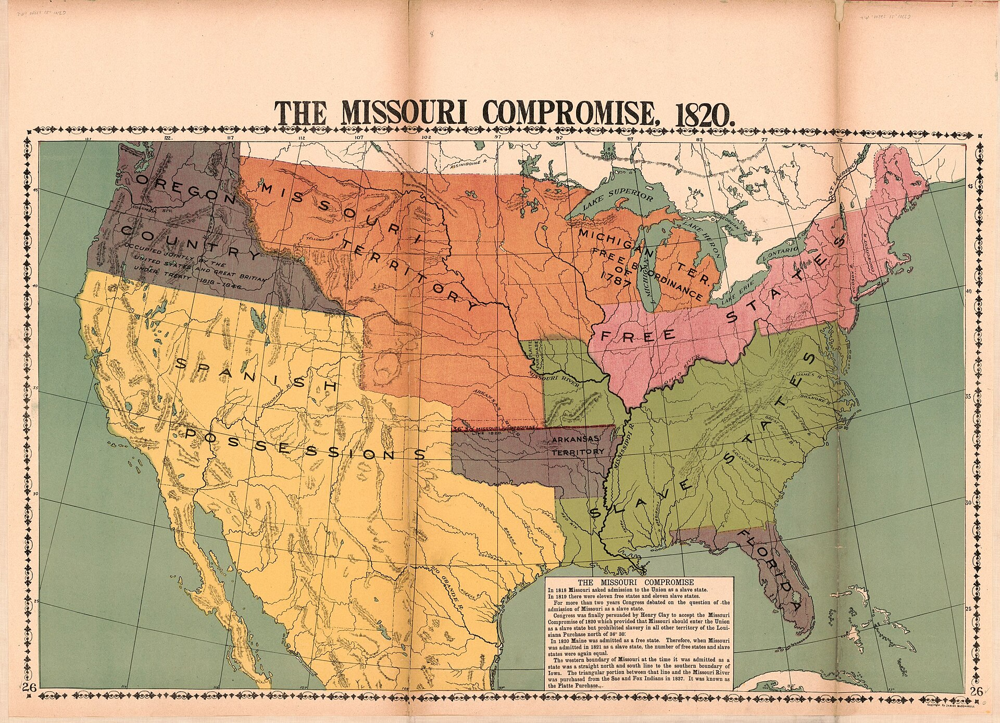

Directions: Work through the five stations in order. Each station holds one record from the settlements of 1820 and 1823. For each record, state what it settled and what it postponed. At the end, judge which of the two settlements rested on firmer ground in its own moment, and defend the judgment from the records.
Source: President James Monroe, annual message to Congress, December 2, 1823 (Yale Avalon Project), as carried in the audited Primary Source Project bank record. Quoted with cuts, marked by ellipses and disclosed here.
"... that the American continents, by the free and independent condition which they have assumed and maintain, are henceforth not to be considered as subjects for future colonization by any European powers. ..."
"... we should consider any attempt on their part to extend their system to any portion of this hemisphere as dangerous to our peace and safety."
The same message pledged that the United States had never taken part in Europe's wars over European concerns, and that doing so did not comport with American policy.
State what this record settled. Name the two claims Monroe makes about this hemisphere, one about colonization and one about the European system, in the message's own words.
State what this record postponed. The message declares a danger but names no army, navy, or consequence behind the declaration. Using the reading, state what force actually sheltered the declaration in 1823 and what the declaration therefore left for later generations to decide.
Source: U.S. Congress, act of March 6, 1820 (National Archives, Our Documents transcript), as carried in the audited Primary Source Project bank record. Quoted with cuts, marked by ellipses and disclosed here. Illustration: map of the Missouri Compromise published by the McConnell Map Co. in 1919 from Library of Congress materials, showing the line a century later; Library of Congress, public domain.

"SEC. 8. And be it further enacted. That in all that territory ceded by France to the United States, under the name of Louisiana, which lies north of thirty-six degrees and thirty minutes north latitude, not included within the limits of the state, contemplated by this act, slavery and involuntary servitude, otherwise than in the punishment of crimes, whereof the parties shall have been duly convicted, shall be, and is hereby, forever prohibited: Provided always, That any person escaping into the same, from whom labour or service is lawfully claimed, in any state or territory of the United States, such fugitive may be lawfully reclaimed ... APPROVED, March 6, 1820."
The act's other sections admitted Missouri's statehood process and offered Missouri terms for its lands. Section 8 is the section that governed every other part of the Louisiana Purchase.
State what this record settled. Work the section's own limits. Name the territory the ban covers, the line it uses, the exception it allows, and the two limits built into the phrase not included within the limits of the state contemplated by this act.
State what this record postponed. The ban says forever, and the proviso in the same section protects the reclaiming of a person escaping into the free territory the ban creates. State what the section does not decide about slavery where it already existed, and what its proviso required free territory to do.
Source: Thomas Jefferson to John Holmes, Monticello, April 22, 1820 (Founders Online, founders.archives.gov, document Jefferson/03-15-02-0518). Quoted from the Founders Online transcription, which keeps Jefferson's spelling and his lowercase sentence openings. Quoted with cuts, marked by ellipses and disclosed here.
"... but this momentous question, like a fire bell in the night, awakened and filled me with terror. I considered it at once as the knell of the Union. it is hushed indeed for the moment. but this is a reprieve only, not a final sentence. a geographical line, coinciding with a marked principle, moral and political, once concieved and held up to the angry passions of men, will never be obliterated; and every new irritation will mark it deeper and deeper. ..."
"... but, as it is, we have the wolf by the ear, and we can neither hold him, nor safely let him go. justice is in one scale, and self-preservation in the other. ..."
Holmes was a Massachusetts congressman who had supported the compromise and would become one of Maine's first senators. Jefferson wrote as a private citizen in retirement, seven weeks after Monroe signed the act.
State what this record settled, in Jefferson's judgment. He grants the crisis is hushed for the moment: state exactly what he says the settlement is, and what he says it is not, in his own sentence about a reprieve.
State what this record postponed, in Jefferson's judgment. Follow his line argument step by step: what joins the geographical line to make it permanent in men's minds, and what does every new irritation do to it? Then state the balance his wolf passage admits he cannot strike.
Source: TEACHING SUMMARY, labeled as a summary on its face. This station summarizes Secretary of State John Quincy Adams's cabinet argument of November 1823 as Adams recorded the season in his diary. It is a summary built for this lesson, not a transcription, and no sentence in it is presented as a verbatim quotation except the cockboat image, which is Adams's recorded phrase for the British proposal. A verbatim diary text from a named scholarly edition could not be verified during this build, so this record is presented as a summary rather than as a quotation.
In the autumn of 1823, Britain's foreign secretary George Canning proposed that Britain and the United States declare together against European interference in the new American republics. Former presidents Jefferson and Madison both advised Monroe to accept. In cabinet, Adams argued against the joint course. A joint declaration would make the United States appear to follow British policy and British sea power, in his image as a cockboat in the wake of the British man of war. It would also commit the United States to Britain's purposes, which were trade purposes, rather than to principles of its own. Adams held that the United States should state its principles to Russia and France directly, in its own name, and take the standing and the risk that came with speaking alone. Monroe adopted Adams's course, and the annual message of December 2, 1823 declared the principles at Station 1 in the president's own voice.
State what this record settled. Name the decision Adams won in cabinet, the two men whose advice he argued against, and what speaking alone was meant to give the United States that a joint declaration would not.
State what this record postponed. Adams's course claimed independence from Britain while the declaration's shelter remained British sea power. State the gap between the claim and the shelter, and name what would have to change before the claim and the power behind it matched.
Source: Representative James Tallmadge, amendment to the Missouri statehood bill, February 13, 1819, as printed in Lawrence Wilson, ed., The National Register, vol. VII (Washington City, 1819), p. 125. Quoted entire, as that transcription carries it.
"And provided, that the further introduction of slavery or involuntary servitude be prohibited, except for the punishment of crimes, whereof the party shall have been fully convicted; and that all children born within the said State, after the admission thereof into the Union, shall be free at the age of twenty-five years."
The amendment freed no person already enslaved in Missouri. It closed the door to bringing more enslaved people in, and it set a generation's end to slavery for children born after admission. The House adopted it. The Senate rejected it. Congress adjourned in March 1819 with Missouri still a territory.
State what this record settled. The amendment proposes a gradual end rather than an immediate one: name its two mechanisms, the people each mechanism covers, and the one group it deliberately leaves enslaved for life.
State what this record postponed, and what it started. The amendment died in the Senate, so its mechanisms never governed Missouri. Using the reading, state what its passage in the House on sectional lines revealed about how Congress now divided, and why that revelation outlasted the amendment itself.
Fill in the table from the five stations. Keep each entry to the record itself.
| Record | What it settled | What it postponed |
|---|---|---|
| 1. The Monroe Doctrine | ||
| 2. Section 8 | ||
| 3. Jefferson's letter | ||
| 4. Adams's argument | ||
| 5. Tallmadge Amendment |
Now judge the two settlements against each other. Firmer ground can mean several things, and a strong verdict says which meaning it is using: ground that could be enforced in 1820, ground both sides had actually accepted, or ground likely to hold without being reopened. Judge the Doctrine and the Compromise on the same meaning, from the records, and answer the strongest fact on the other side.
Write your verdict in a paragraph. State which of the two settlements rested on firmer ground in its own moment, define the ground you mean, defend the choice from at least three stations, and answer the strongest fact against it.
Settled. The message claims that the American continents are no longer subjects for future colonization by any European power, and that any attempt to extend the European political system to any portion of this hemisphere will be considered dangerous to the peace and safety of the United States. It also settled the republic's outward posture in its own name, since Adams's course at Station 4 made the declaration American rather than joint.
Postponed. The declaration named no force behind itself. In 1823 the United States could not have enforced it alone, and its practical shelter was the British navy, whose trade interest in open republics and shut out rivals ran the same way. What it postponed was the question of enforcement and meaning. Later generations had to decide what dangerous required them to do, and each rereading, including the corollary a later unit studies, is a decision the men of 1823 left open.
Settled, with the arithmetic of its limits. The ban covers the territory ceded by France under the name of Louisiana that lies north of thirty six degrees and thirty minutes north latitude. It prohibits slavery and involuntary servitude there forever, except as punishment for crimes after conviction. Its two built in limits are the line itself, which leaves the country south of it open, and the exclusion of the state contemplated by the act, Missouri, which entered with slavery although it stood north of the line.
Postponed. The section decides nothing about slavery in the states where it already existed, nothing about the country south of the line, and nothing about territory the United States might later acquire outside the Louisiana cession, the gap Lesson 8 walks into. Its proviso required the free territory the ban created to return a person escaping into it to the person claiming his or her labour or service, so the ban's country was never closed to slavery's enforcement, only to its legal residence.
Settled, in Jefferson's judgment. Jefferson grants only the hush. The settlement is a reprieve only, not a final sentence. In his judgment the Compromise settled the admission question for the season and nothing beneath it.
Postponed, in Jefferson's judgment. The line joins a geographical fact to a marked principle, moral and political, and a line so joined, once conceived and held up to the angry passions of men, will never be obliterated. Every new irritation marks it deeper and deeper, so postponement itself does damage over time. The wolf passage admits the balance he cannot strike: the country holds slavery as a wolf by the ear, justice in one scale and self preservation in the other, able neither to hold on nor safely to let go. Students should note that Jefferson states this paralysis as his own position, from Monticello, as a man who held enslaved people.
Settled. Adams won the decision to declare American principles in America's own name. He argued against the advice of Jefferson and Madison, both of whom favored accepting Canning's proposal. Speaking alone was meant to give the United States standing as the hemisphere's spokesman in its own right, and to keep American policy from being read in Europe as an appendage of British trade policy.
Postponed. The gap is the lesson's central irony about the Doctrine and students should state it plainly. The claim was independence from Britain. The shelter was the British navy, the strongest fleet in the world, whose interest happened to run the same way in 1823. Claim and power would match only when the United States built sea power of its own sufficient to enforce the declaration, a change decades away in 1823. This station is a labeled teaching summary, and teachers should keep that label in front of students as a sourcing lesson in itself.
Settled (what it proposed, since it settled nothing in law). Its two mechanisms were a bar on the further introduction of slavery into Missouri, except as punishment for crime, and freedom at twenty five for children born in the state after admission. The group it deliberately left enslaved for life was every person already enslaved in Missouri in 1819, whose status the amendment did not touch. Its gradualism was the point: restriction designed to end slavery in one state across a generation without freeing any living person by the act itself.
Postponed and started. The amendment died in the Senate and Missouri's status was postponed to the Compromise. What it started was the revelation. The House adopted it on nearly perfect sectional lines, northern members for restriction and southern members against, in a Congress elected under one dominant party. The division the vote exposed, by section rather than by party, is the sectionalism the lesson's vocabulary names, and it outlasted the amendment because every later territory question, in Lesson 8 and beyond, would be voted the same way.
Full credit verdicts define firmer ground, apply one definition to both settlements, use at least three stations, and answer the strongest opposing fact. The strongest case for the Compromise is acceptance: both sections voted for it, it became law on March 6, 1820, and its line governed actual admissions for a generation, while the Doctrine was a unilateral statement no European power had accepted and none had tested. The strongest case for the Doctrine is exposure: the Compromise governed by drawing slavery's map and thereby, on Jefferson's own evidence at Station 3, guaranteed its own reopening with every new territory, while the Doctrine risked nothing it could lose in 1823 and gathered strength each time a later generation chose to stand on it. The strongest opposing fact against the Compromise is Station 3 entire. The strongest opposing fact against the Doctrine is Station 4's gap, a claim of independence sheltered by the British fleet. Verdicts that praise confidence in general, or that judge one settlement by acceptance and the other by enforcement, earn partial credit.